🔐 Inicio de Sesión
Para acceder al sistema abre tu navegador y ve a la dirección del servidor COMEXCARE.
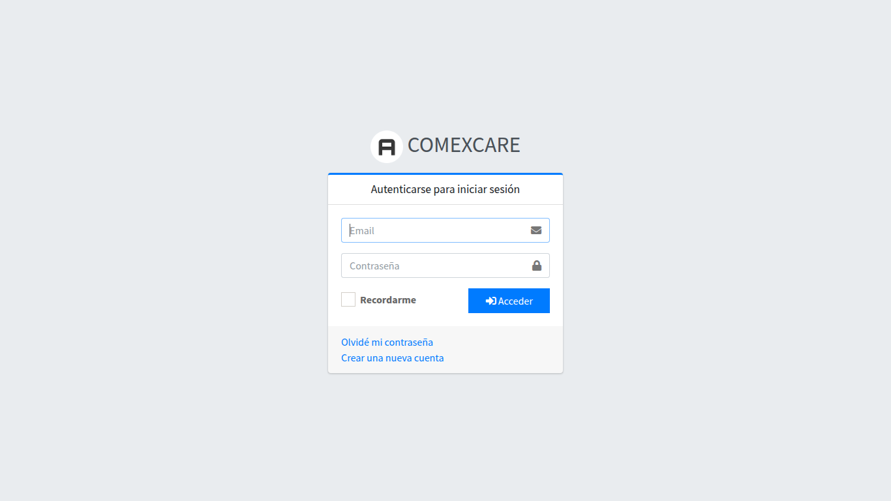
Proceso de inicio de sesión
- Ingresa tu correo — La dirección de correo electrónico que te proporcionó el administrador
- Ingresa tu contraseña — Tu contraseña personal (solicita un cambio al administrador si la olvidaste)
- Haz clic en "Iniciar sesión" — El botón azul al final del formulario
📊 Dashboard
Pantalla principal que se muestra después de iniciar sesión. Contiene un resumen del estado general del sistema.
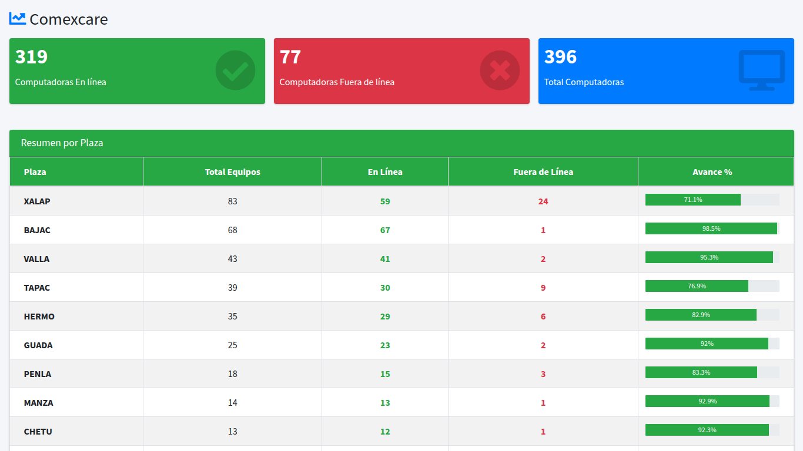
¿Qué información muestra?
- Computadoras en línea — Número de equipos activos en este momento
- Computadoras fuera de línea — Equipos que no han reportado actividad reciente
- Distribuciones activas — Transferencias de archivos actualmente en progreso
- Alertas del sistema — Notificaciones sobre equipos o procesos que requieren atención
Botones y acciones disponibles
- ⚡ Acceso rápido — Tarjetas con atajos a las secciones más usadas
- 🔄 Actualizar — Recargar los datos del dashboard
👥 Usuarios
Módulo para administrar las cuentas de usuario del sistema. Acceso: menú Administración → Usuarios.
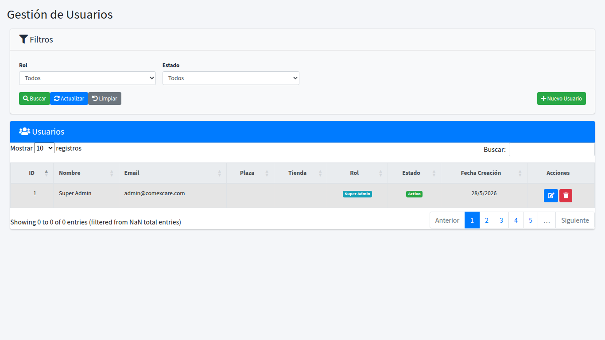
Proceso: Crear un nuevo usuario
- Haz clic en "Nuevo" — Botón ubicado en la parte superior derecha de la tabla
- Completa el formulario — Ingresa nombre, correo electrónico y contraseña
- Asigna un rol — Selecciona el nivel de permisos (Administrador, Supervisor, Consultor, etc.)
- Guarda — Haz clic en "Guardar" para crear el usuario
Acciones disponibles en la tabla
- ✏️ Editar — Modificar datos del usuario
- 🗑️ Eliminar — Dar de baja un usuario (confirmación requerida)
- 🔒 Cambiar rol — Modificar los permisos asignados
- ✅ Activar/Desactivar — Habilitar o deshabilitar temporalmente una cuenta
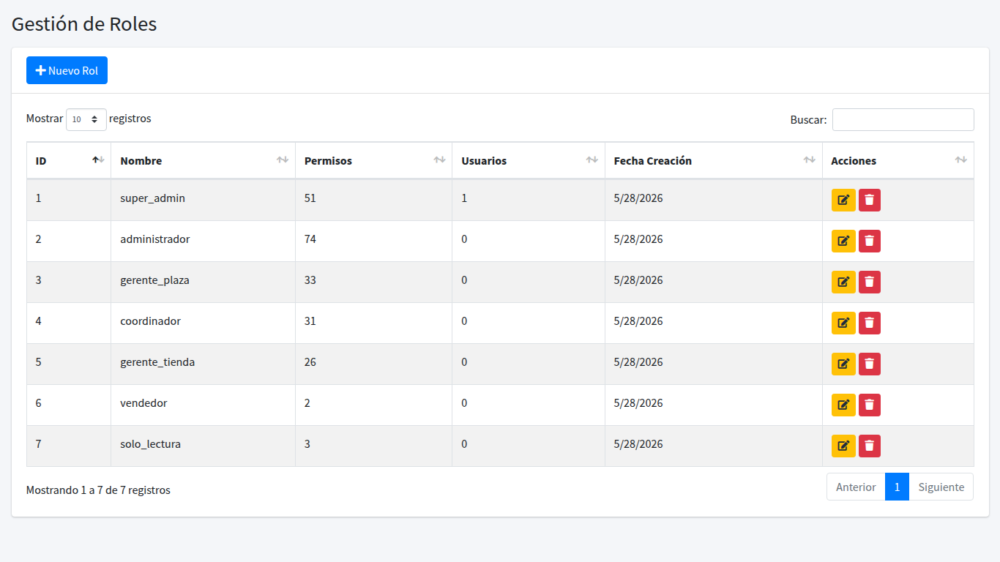
Roles y permisos
Los roles agrupan permisos. Puedes crear roles personalizados y asignar permisos específicos a cada uno.

Proceso: Asignar permisos a un rol
- Ve a la sección Roles — Menú Administración → Roles
- Selecciona un rol — Haz clic en el rol que deseas modificar
- Marca los permisos — Activa o desactiva los permisos según necesites
- Guarda los cambios — Confirma la asignación
💻 Computadoras
Inventario de todos los equipos registrados con el agente COMEXCARE instalado. Acceso: Administración → Computadoras.
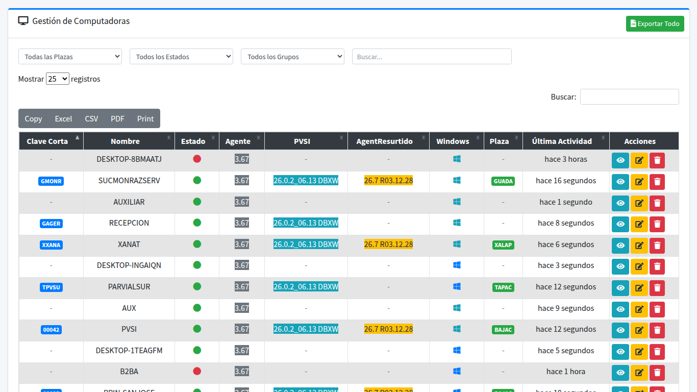
Información disponible por equipo
- Nombre del equipo y Short Key — Identificadores únicos
- 🟢 En línea / 🔴 Fuera de línea — Estado actual del agente
- IP y MAC — Direcciones de red
- Versión del agente — Software instalado
- Grupo — Grupo al que pertenece
- Windows — Versión del sistema operativo
- BitLocker — Estado del cifrado de disco
- Último heartbeat — Fecha y hora de la última conexión
Acciones disponibles
- 👁️ Ver detalle — Información completa del equipo
- 📋 Ver logs — Historial de actividad del agente
- 📥 Exportar — Descargar inventario a Excel

Proceso: Ver detalle de una computadora
- Localiza el equipo — Usa el buscador o los filtros de la tabla para encontrar la computadora
- Haz clic en el nombre — Se abrirá la vista de detalle con toda la información del equipo
- Revisa los datos — Desde aquí puedes ver logs, estado y editar la configuración
📂 Grupos
Organiza las computadoras en grupos para facilitar las distribuciones masivas. Acceso: Administración → Grupos.
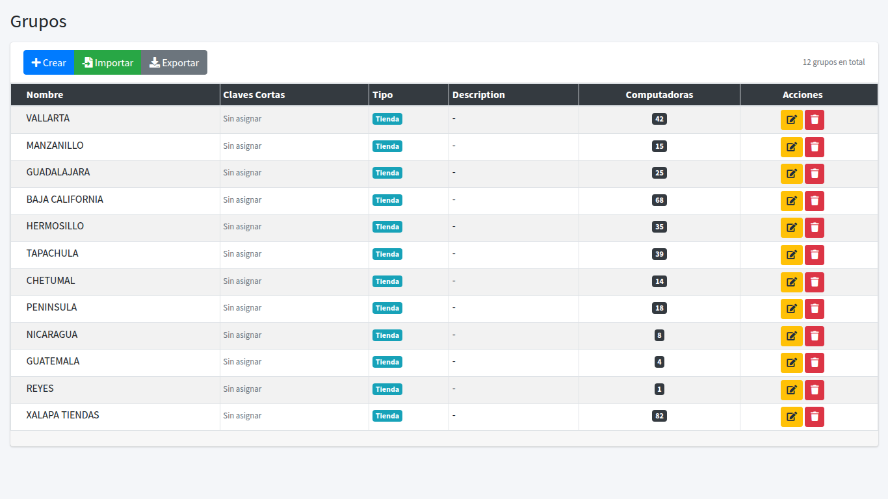
Proceso: Crear un grupo
- Haz clic en "Nuevo grupo" — Botón en la parte superior
- Asigna un nombre — El nombre debe ser descriptivo (Ej: "Tiendas Monterrey", "Sucursales Norte")
- Configura la Short Key — Clave única que los agentes usarán para registrarse automáticamente en este grupo
- Agrega una descripción — Opcional pero recomendada
- Guarda — El grupo quedará disponible para asignar computadoras
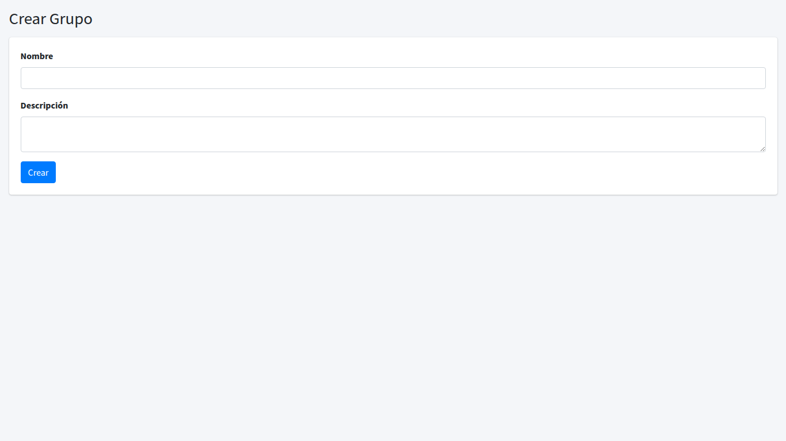
Proceso: Asignar computadoras a un grupo
- Ve al detalle del grupo — Haz clic en el nombre del grupo
- Selecciona "Editar" — Para modificar los equipos asignados
- Agrega o quita equipos — Marca o desmarca las computadoras que pertenecen al grupo
- Guarda — Los cambios se aplican inmediatamente
📤 Distribuir Archivos
Envía archivos (actualizaciones, binarios, documentos) a una o varias computadoras remotas. Acceso: Administración → Distribuciones.
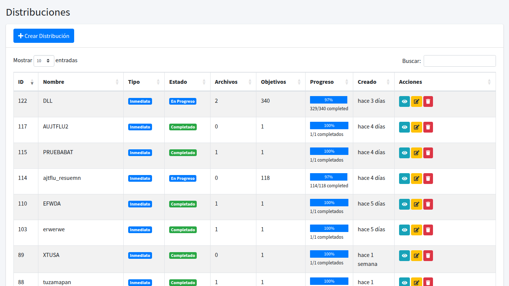
Proceso: Crear una nueva distribución
- Haz clic en "Nueva distribución" — Botón en la esquina superior derecha
- Completa el formulario:
- Nombre — Identifica la distribución (Ej: "Actualización agente v2.1")
- Tipo — Archivos, Actualización, Comando, o PVSI
- Subcarpeta — Carpeta de destino en el equipo remoto
- Archivos — Selecciona los archivos a distribuir
- Selecciona destino: Elige computadoras específicas o grupos completos
- Configura la programación:
- Inmediata — Se envía al guardar
- Programada — Se enviará en una fecha/hora específica
- Recurrente — Se repite en intervalo configurable
- Guarda — La distribución se procesará según la programación indicada
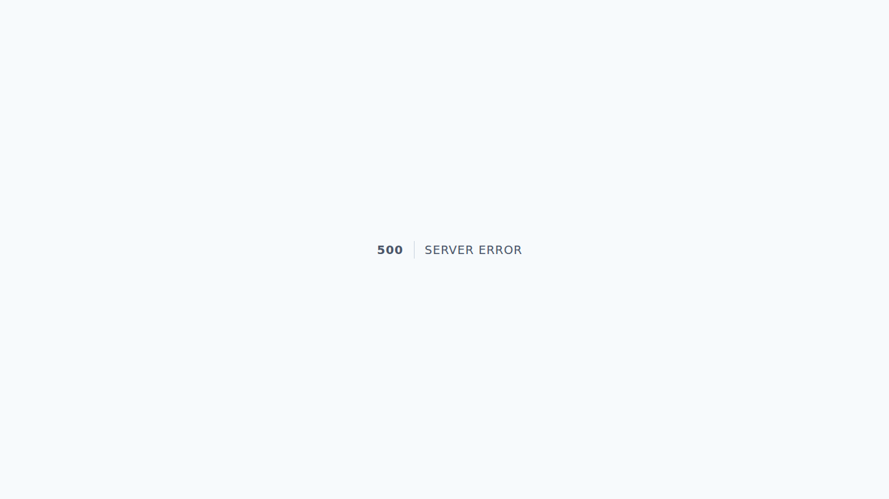
Estados de una distribución
- ⏳ Pendiente — Esperando ser procesada
- 🔄 En progreso — Archivos en transferencia a los destinos
- ✅ Completada — Todos los destinos recibieron los archivos
- ❌ Fallida — Error en uno o más destinos
- ⏹️ Detenida — Pausada manualmente
Acciones en tiempo real
- ⏸️ Detener — Pausa temporalmente la distribución
- ▶️ Iniciar — Reanuda una distribución detenida
- 🔄 Reiniciar — Vuelve a intentar desde cero
- 📊 Progreso — Ver el avance en tiempo real por cada computadora destino
📥 Recibir Archivos
Recolecta archivos desde las computadoras remotas (reportes de ventas, DBF, logs, etc.). Acceso: Administración → Recepciones.
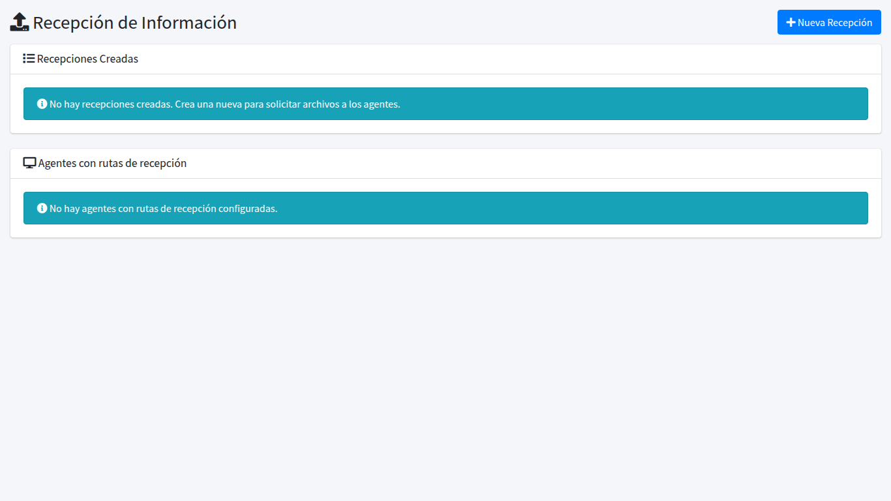
Proceso: Crear una recepción
- Haz clic en "Nueva recepción"
- Configura los parámetros:
- Nombre — Identifica la recepción
- Tipo de archivo — Extensiones o máscaras de archivos a recolectar
- Archivos específicos — Nombres exactos de archivos a recibir
- Grupo / Computadoras — Origen de los archivos
- Programa la recepción: Inmediata, programada o recurrente
- Guarda — Los archivos comenzarán a recolectarse según la programación
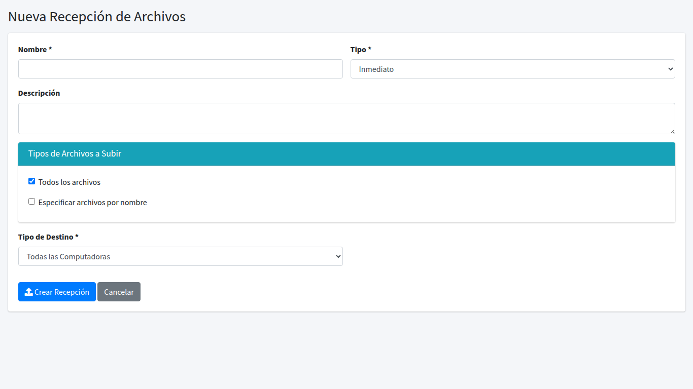
Estados de recepción
- ⏳ Pendiente — Esperando la recolección
- 🔄 En progreso — Recibiendo archivos de los orígenes
- ✅ Completada — Archivos recibidos exitosamente
- ❌ Error — Problema al recibir archivos de algún origen
🔄 Versiones de Agente
Gestiona las versiones del software agente instalado en las computadoras remotas. Acceso: Administración → Versiones de Agente.
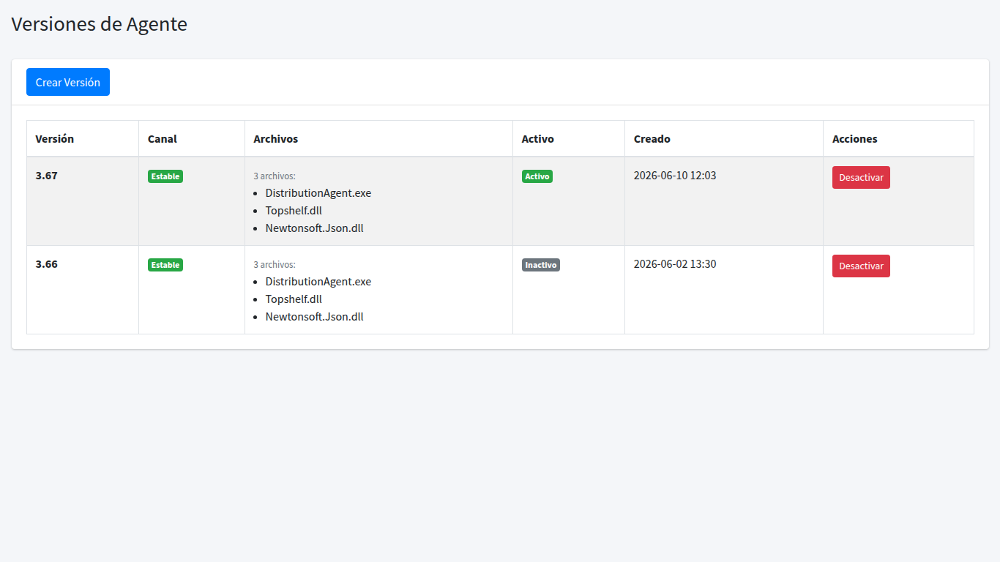
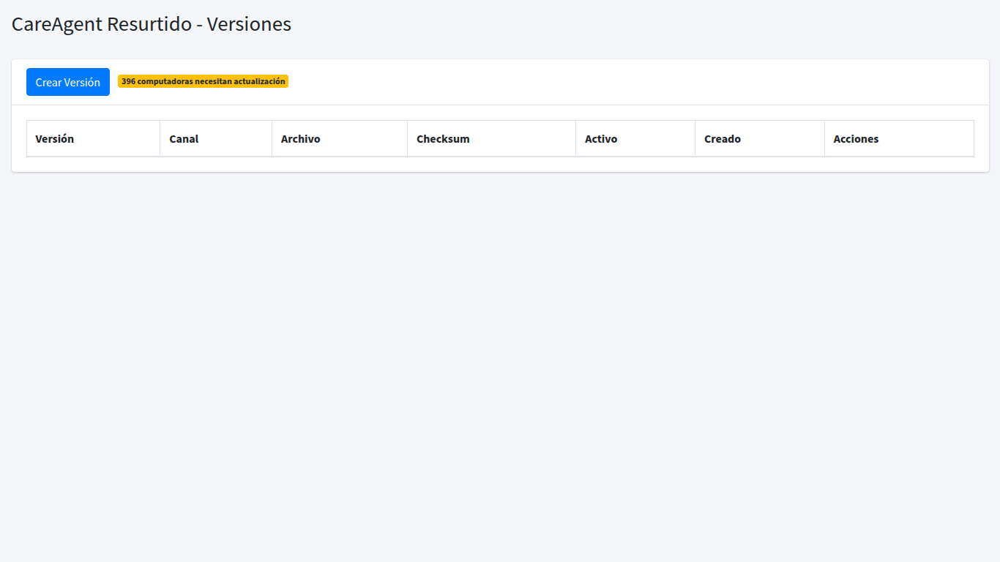
Tipos de agente
- Agente de distribución — Maneja la transferencia de archivos y actualizaciones a las tiendas
- Agente de resurtido — Maneja la sincronización de datos de resurtido y stock
Proceso: Subir una nueva versión de agente
- Haz clic en "Nueva versión" — Botón en la parte superior
- Completa los datos:
- Versión — Número de versión (Ej: 2.1.0)
- Canal — Stable o Beta
- Archivo binario — Selecciona el archivo del agente (.exe, .zip, etc.)
- Changelog — Notas de la versión (qué cambios incluye)
- Guarda — La versión queda disponible para ser distribuida a los equipos
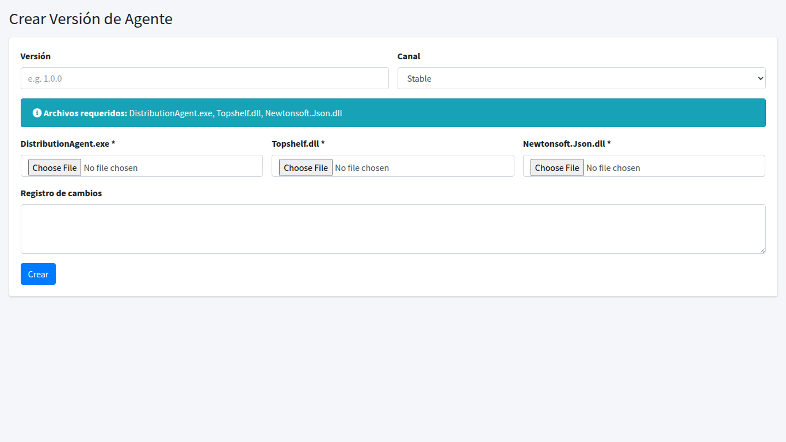
📋 Listas de Archivos
Controla qué archivos están permitidos o bloqueados en el sistema de distribución. Acceso: Administración → Listas de Archivos.
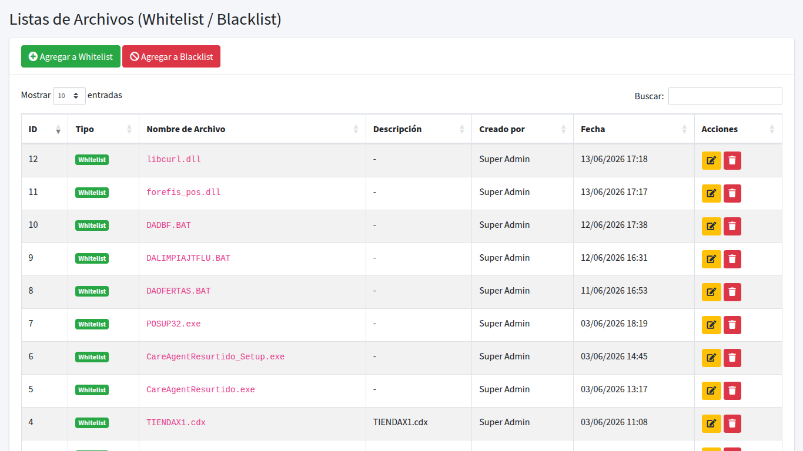
Tipos de lista
- 📗 Lista blanca (Whitelist) — Solo los archivos registrados aquí pueden ser distribuidos. Todo lo demás será bloqueado.
- 📕 Lista negra (Blacklist) — Los archivos registrados aquí serán bloqueados. Todo lo demás está permitido.
Proceso: Agregar un archivo a la lista
- Selecciona el tipo de lista — Blanca o negra según tu necesidad
- Ingresa el nombre del archivo — Puedes usar el nombre exacto o máscaras (Ej: *.exe, reporte_*.csv)
- Agrega una descripción — Explica por qué se permite/bloquea este archivo
- Guarda — La regla se aplica inmediatamente a todas las distribuciones
🗄️ Archivos DBF
Monitoreo de archivos DBF generados por el sistema de las tiendas. Estos archivos contienen datos de ventas, inventarios y movimientos. Acceso: Reportes → Archivos DBF.
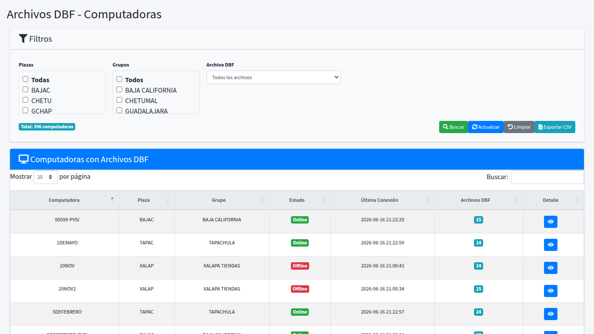
¿Qué información muestra?
- Tienda — Sucursal que generó el archivo
- Plaza — Región de la tienda
- Nombre del archivo — Identificador del DBF recibido
- Fecha de recepción — Cuándo se recibió el archivo
- Tamaño — Peso del archivo en KB
- Estado — Procesado, pendiente o con error
Proceso: Monitorear archivos DBF
- Filtra por tienda o período — Usa los filtros de la parte superior
- Revisa el estado — Identifica tiendas que no han enviado sus archivos
- Exporta los datos — Descarga el listado a Excel si necesitas un reporte externo
🎫 Vales
Reporte de vales (vouchers) emitidos y canjeados en las tiendas. Acceso: Reportes → Vales.
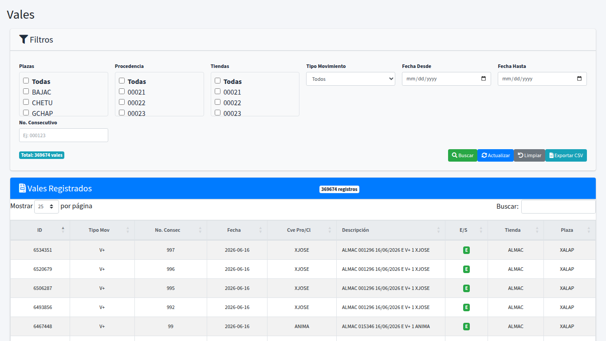
Información disponible
- Tipo de movimiento — Emisión, canje, cancelación, etc.
- Número de vale — Identificador único del vale
- Fecha — Cuándo se realizó la operación
- Cliente — Nombre o código del cliente
- Importe total — Monto del vale
- Tienda — Sucursal donde se realizó la operación
- Plaza — Región de la tienda
- Estado — Vigente, canjeado, cancelado
Proceso: Consultar vales
- Selecciona el período — Define el rango de fechas a consultar
- Filtra por tienda o plaza — Si necesitas datos de una región específica
- Revisa los resultados — Los datos se muestran en una tabla interactiva con paginación
- Exporta si es necesario — Descarga el reporte en Excel o PDF